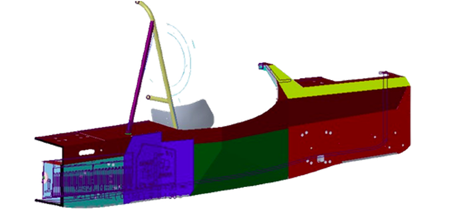
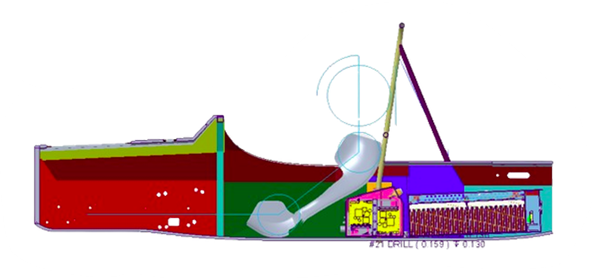
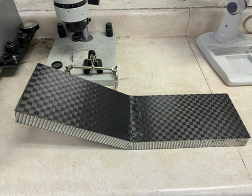

01 / FEATURED PROJECT · ILLINI ELECTRIC MOTORSPORTS
Designing a lighter
composite chassis.
From thousands of possible laminate schedules to a race car chassis supported by analysis, testing, and structural equivalency documentation.


THE CHALLENGE
Make it lighter.
Keep it safe.
The chassis needs to be lightweight without compromising structural performance or the safety requirements of Formula SAE. The SAE requires documentation on design and testing of regulated panel test samples.
As Chassis Project Lead, I worked on sizing the regulated composite panels, selecting the laminate schedules, validating their behavior via physical testing, and documenting the results for SAE structural equivalency approval.
THE PROCESS / 01
Turning laminate theory into a design tool.
What I did
I built a Python program to iterate through more than 20,000 composite ply schedules, then shortlisted two for physical testing based on panel stiffness and strength.
How I approached it
I evaluated the laminate behavior using fundamentals of solid mechanics and Classical Laminate Theory (CLT) and automated the ply schedule search. I also compared the layups to those used in past years, including any relevant data.
Using the test data and the Formula SAE Structural Equivalency Spreadsheet (SES), I completed weight analysis and sized the regulated chassis panels with the spreadsheet provided and rule-based checks.

PHYSICAL VALIDATION
Testing it in the real world.
I performed three-point bending and perimeter shear tests on the shortlisted panels to obtain their load response to out of plane shear.

THE PROCESS / 02
From test coupons to the full chassis.
Manufacturing and integration
The team manufactured sandwich panels using the T700 and T800 carbon fiber with an aluminum core.
I used Creo Parametric to model a simplified representation of the chassis, mapping different structural panel types, sizes, and layup schedules to their locations. This organization helped the judges understand the chassis and streamlined the manufacturing process.
Regulatory documentation
I documented panel sizing and test results in the SES and submitted it to SAE for review and feedback.
THE OUTCOME
Analysis is only useful when it holds up outside the computer.
10 lb lighter
Optimizing the chassis ply schedules contributed to a 10 lb weight reduction.
Fastest SES approval
Achieved the fastest structural equivalency approval in the team’s history.
END OF PROJECT
Thanks for reading.
This is the chassis design and validation work I’m most excited to share. More projects are in the portfolio.